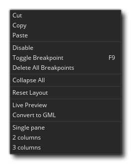
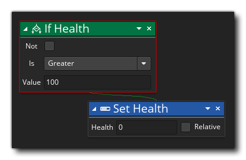

Arrastrar y soltar (DnD™) es una herramienta de guiones visual que se puede usar para crear tus juegos sin escribir ningún código. Eso no quiere decir que no estés programando código cuando usas DnD™, ya que tú lo eres, solo que tu código se crea y se presenta de forma visual usando "bloques" de acciones en lugar de texto. Las acciones son expresiones simples o declaraciones que pueden "encadenarse" juntas para hacer que una instancia de un objeto haga algo cuando se coloca en una sala, por ejemplo, podría tener una acción en un evento Crear para mover una instancia en una dirección aleatoria, y otra acción en un evento de colisión para hacer rebotar las cosas con las que colisiona (para obtener más información sobre los diferentes eventos disponibles y cómo funcionan juntos, consulte la sección sobre Eventos de objetos ).  La imagen de arriba muestra un objeto típico abierto en un área de trabajo para editar. Tiene una ventana de "Evento" y una ventana de "Código" encadenadas a ella, y en la ventana de código puede ver dónde hemos construido nuestro DnD™. Miremos un poco más cerca en esta ventana y veamos qué opciones tenemos disponibles:
La imagen de arriba muestra un objeto típico abierto en un área de trabajo para editar. Tiene una ventana de "Evento" y una ventana de "Código" encadenadas a ella, y en la ventana de código puede ver dónde hemos construido nuestro DnD™. Miremos un poco más cerca en esta ventana y veamos qué opciones tenemos disponibles:  A continuación puede encontrar más información sobre cada una de las secciones que se muestran:
A continuación puede encontrar más información sobre cada una de las secciones que se muestran:
Cuando agrega un Evento a su objeto, se abre una nueva pestaña en la ventana de código para mostrar el contenido de ese evento. Puede agregar múltiples eventos y tener múltiples pestañas abiertas al mismo tiempo, cambiar entre ellas y editarlas como lo desee. También puede cerrar las pestañas en cualquier momento para reducir el desorden (al seleccionar nuevamente el evento en el objeto, las volverá a abrir), y puede hacer clic
y arrastre la pestaña fuera de la ventana hacia su propia ventana de código, en cuyo caso al cerrar el objeto o la ventana de código no se cerrará la nueva ventana. Las pestañas se pueden arrastrar hacia la izquierda o hacia la derecha para volver a ordenarlas también. `
A medida que agregue bloques de acción a su evento, aparecerán en forma de "taquigrafía" como una descripción general en inglés de lo que está sucediendo. El orden de visión general es el orden en que cada uno de los bloques de acción se ejecutará para ese evento, y puede hacer clic
En esta área del área de trabajo, se arrastran Acciones de la Caja de herramientas para crear su código DnD™. Hacer clic
A medida que agregue bloques de acción a su código, se "encadenarán" visualmente para indicar el orden en que se producirán las diferentes acciones, aunque la forma en que se crea esta cadena dependerá del bloque inicial que se haya utilizado. Por ejemplo, un if bloque tendrá dos cadenas: una para los bloques que se invocarán si la condición que se controla es true y luego el siguiente bloque después de eso. Para obtener más información sobre la construcción de bloques de acción en el código, consulte la siguiente sección.
Mientras se encuentre en el espacio de trabajo Bloque de acciones, puede usar el botón central del mouse
para desplazarse y la rueda del mouse para desplazar la lista de acciones hacia arriba o hacia abajo. Si sostienes
mientras mueve la rueda del mouse, la vista se desplazará hacia la izquierda / derecha, y si mantiene presionado
/
y mueva la rueda del mouse, la vista se acercará y alejará, lo que le permitirá ver más espacio de trabajo con las acciones. Puede hacer clic en cualquier acción de la lista de acciones a la izquierda para enfocar esa acción, restablecer el zoom y la posición. También tenga en cuenta que puede cambiar el tamaño de los bloques de acción moviendo el mouse hacia los bordes del bloque y luego, cuando el cursor cambia, arrastrando en la dirección que necesita.
También puede hacer clic con el botón derecho
en cualquier parte del espacio de trabajo de DnD™ para que aparezca el menú de RMB: 
Este menú tiene las siguientes opciones:
- Cortar / Copiar / Pegar: Esto le permitirá cortar, copiar o pegar cualquier acción que esté seleccionada en el área de trabajo. Tenga en cuenta que puede usar
- Deshabilitar: este comando desactivará la acción (o acciones) seleccionada. Cuando una acción está desactivada, todavía es visible en el área de trabajo, pero no se ejecutará cuando compile el juego. De esta forma, puede agregar / eliminar acciones para probar y depurar. La imagen a continuación muestra algunos códigos DnD™ con acciones deshabilitadas:
Puedes ver que las acciones " If Score "y" Go To Next Room "han sido desactivados y se saltearán cuando el juego sea probado o compilado".
- Alternar punto de interrupción: este comando activará o desactivará un punto de interrupción para la acción seleccionada. Un punto de interrupción es simplemente un punto en el código DnD™ donde el depurador debe detenerse cuando el juego se ejecuta en Modo de depuración. Se resaltará una acción con un punto de interrupción asignado, como se muestra en la imagen a continuación (el " If Health "acción se ha establecido como un punto de interrupción): 
- Eliminar todos los puntos de interrupción: con este comando puede eliminar todos los puntos de interrupción del código DnD™.
- Contraer todo: las acciones de DnD™ se pueden contraer o expandir, donde una acción contraída simplemente mostrará el nombre de la acción, pero no ninguno de los valores internos, lo que maximiza el espacio disponible para el espacio de trabajo. Por ejemplo:
Como puede ver, las acciones ocupan mucho menos espacio, y aún puede ver lo que hacen desde la breve descripción dada a la derecha.
- Restablecer diseño: Esto reiniciará el espacio de trabajo DnD™, configurando el nivel de zoom al 100%, enfocándose en la acción seleccionada actualmente, y expandiendo cualquier (o todas) acciones colapsadas también.
- Vista previa en vivo: cuando seleccione esta opción, habilitará o deshabilitará la ventana de vista previa del código DnD™ a GML (Idioma de GameMaker ). Esto se explica con más detalle en la página Cómo cambiar el código de DnD™.
- Convertir a GML: convertirá todas sus acciones en el evento actual al código GML (lenguaje de GameMaker ). Tenga mucho cuidado con esto ya que no puede volver a convertir GML en las acciones de DnD™ desde las que se creó. Puede convertir el evento posterior a un evento DnD™ de código, pero ningún código simplemente se le envuelto en una Execute Code acción.
- Columnas de panel único / 2 columnas / 3: Estas opciones se pueden usar para dividir el espacio de trabajo actual en 1, 2 o 3 "paneles" diferentes. Cada panel es un espacio de trabajo separado que puede tener scripts o eventos arrastrados hacia ellos para que pueda editar y comparar 2 o más bloques de código DnD™ a la vez. La imagen a continuación muestra dos scripts en una ventana que se muestra en su propio panel de área de trabajo:
La caja de herramientas es donde se almacenan todas las acciones de DnD™, con diferentes secciones que contienen colecciones (bibliotecas) de acciones que son similares o relacionadas. Cada colección de acciones está relacionada con un tema específico o propósito común y simplemente haga clic
Para obtener una lista completa de las acciones disponibles, así como los argumentos que toman y cómo se pueden encadenar, consulte la sección Referencia de Arrastrar y soltar.

Las siguientes páginas profundizan un poco más sobre cómo construir código de bloque de acción, así como sobre cómo establecer el alcance de las acciones para afectar diferentes cosas dentro de su proyecto y otros detalles importantes: